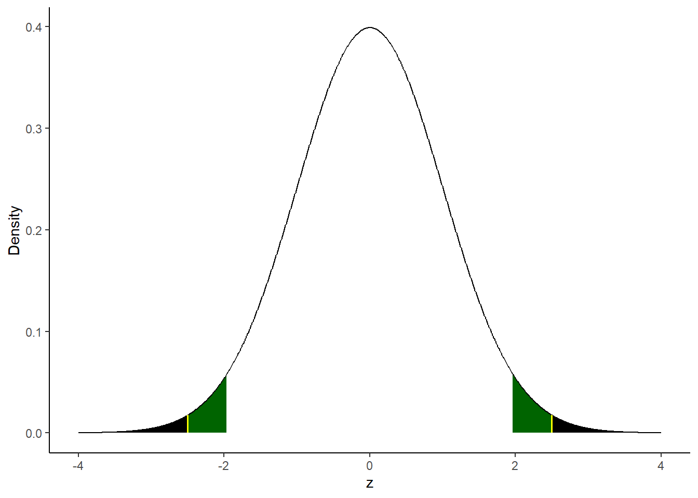
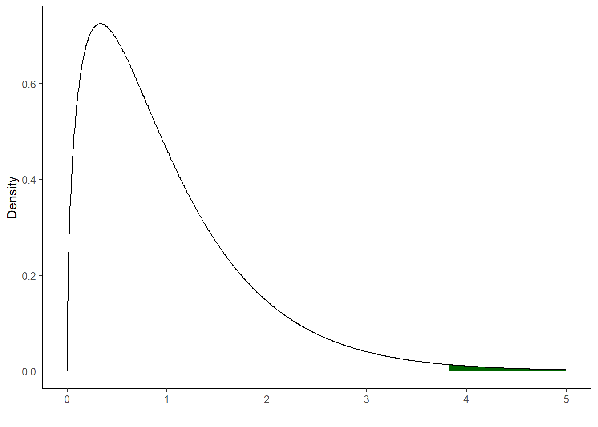

Chapter 8 Inference
8.1 The basics of hypothesis testing37
In descriptive statistics, we work with a sample of data obtained from a larger population and we are interested in understanding the characteristics of the sample. In inferential statistics, we use the sample to try to obtain conclusions (more precisely said, to make inference) regarding the characteristics of the population from which the sample is obtained. For example, having a sample available we might be interested in inferring whether the sample mean (sample statistics, \(\bar{x}\)) is representative of the population mean (population parameter, \(\mu\)). That is, we are interested in generalising the information obtained from the sample to the entire population. Of course it is easy to imagine that our conclusion will be subject to error as we only have one sample available. With only one sample available, it is very unlikely that the sample mean will be identical to the population mean. So in our inference process we have to take this sampling error into account.
Hypothesis testing is a widely used statistical procedure for making inference from a sample to a population.38 The test starts with two statements. The null hypothesis, denoted \(H_0\). The null hypothesis describes the condition that is assumed to be true at the time. It is often compared to the situation in court where an accused person is assumed to be innocent until there is enough evidence to find him guilty. The second statement is the alternative hypothesis, denote \(H_1\). The null hypothesis and the alternative hypothesis are mutually exclusive. The alternative hypothesis is the one that is favoured if enough evidence is found. Many times we have a theory that suggests which values to specify for the null hypothesis and the alternative hypothesis. Hypothesis testing is a means of testing the statistical (not practical) validity of our theory.
\[H_0: \mu = \mu_0\]
\[H_1: \mu \neq \mu_0\]
How do we decide between the null hypothesis and the alternative hypothesis? We assume that we have a normally distributed random variable \(X\) with mean \(\mu\) and standard deviation \(\sigma\). Let us further assume that the population mean \(\mu\) (which we do not know) is a value equal to \(\mu_0\) (maybe because theory or experience tells us so). In a first sample obtained from our random variable \(X\), we compute the mean (\(\bar{x}\)) and obtain a value close to the hypothesized value \(\mu_0\). Since we know that data are obtained from a normally distributed \(X\), we know that the probability of obtaining a value close to the mean is actually quite high. In a second sample, a much larger value of \(\bar{x}\) is obtained. In this case, we know that obtaining values much larger than the mean is less probable (in other words, we are in the tales of the distribution). What should we conclude with such a high value now? Does the sample results confirm or contradict the null hypothesis, i.e. the hypothesized value for the mean of the population? We can continue to believe that the null hypothesis is correct and that we have just an unlucky sample from which we have obtained a very high mean but we are somehow convinced that the hypothesized value is still correct (\(H_0: \mu = \mu_0\)) and the sample was just a bit off. Or we can convince ourselves that the sample result contradicts the assumed value \(\mu_0\) and that we were wrong with the null hypothesis (therefore, \(H_1: \mu \neq \mu_0\)). In the rule, the null hypothesis is rejected if the probability of obtaining such an extreme value is smaller than an arbitrarily defined probability.
There are two kinds of mistakes that can be made. A Type I error and a Type II error. When we reject a hypothesis that is actually true, we are committing a Type I error. When we are not rejecting (or “accepting”, but this is not the right terminology) a hypothesis that should be rejected, we are committing a Type II error. Since we are basing our decision on a sample, and there is always uncertainty in the sampling process, we are more or less sure that there is some uncertainty attached to our test conclusion. In hypothesis testing we decide in advance what kind of error we want to make. The procedure is to decide in advance to commit to a certain Type I error, e.g. we decide in advance to tolerate a Type I error in 5% of the cases. This value is called significance level and is traditionally indicated with the greek letter \(\alpha\).39
Example
The mean lifetime of a sample of 100 light bulbs is computed to be 1570 hours with a standard deviation of 120 hours. If \(\mu\) is the mean lifetime of all the light bulbs produced, test the hypothesis that the population mean is \(\mu = 1600\) hours against the alternative that \(\mu \neq 1600\) using a significance level of 5%. Find the p-value of the test and build a 95% confidence interval.
\[H_0: \mu = 1600\]
\[H_1: \mu \neq \space 1600\]
We need to construct our test statistic to perform the test. In practice, wee need to transform the computed mean obtained from the sample of light bulbs into a statistic that follow a standard normal distribution with zero mean and unit variance.
\[z_{test} = \frac{\bar{x} - \mu}{\frac{\sigma}{\sqrt{n}}} = \frac{1570 - 1600}{12} = -2.5\]
n <- 100
sample_mean <- 1570
sample_sigma <- 120
mu <- 1600
alpha5p <- 0.05
z_test <- abs((sample_mean - mu) / (sample_sigma / sqrt(n)))
z_test## [1] 2.5z_crit_5p <- qnorm(alpha5p/2, mean = 0, sd = 1, lower.tail = FALSE)Since in this exercise we are interested in performing a two-sided test (look a the formulation of the null and alternative hypothesis), we take the absolute value of our \(z\) test. We can reject \(H_0\) at the 5% significance level (\(\alpha\) = 5%) if,
\[|z_{test}| > z_{crit}\]
z_test > z_crit_5p## [1] TRUEWe can reject \(H_0\) at the 5% significance level. In the following graph, in green we can see the rejection region (the two green shaded areas add up to 5%) while with the yellow line it is indicated the value of our \(z\) test in both tails of the distribution. As we said, since the value of our \(z\) test falls within the rejection region, we can reject \(H_0\) at the 5% significance level.

What do we see highlighted in black in the graph above? The sum of the two black areas represent our p-value for the z score that we have just calculated. We can think of the p-value as the smallest significance level at which we still reject the null hypothesis (or the largest significance level at which the null hypothesis cannot be rejected). How large is the p-value for our z test?
pvalue <- pnorm(z_test, mean = 0, sd = 1, lower.tail = FALSE) * 2
pvalue*100## [1] 1.241933How can we interpret the p-value? In our exercise, the p-value of 1.24% represents the probability that a mean lifetime of less than 1570 or more than 1630 hours would occur by chance if \(H_0\) were actually true. A rather small probability. How did we obtain the values 1570 and 1630? We have used (half) of the p-value to calculate the quantiles of a normal distribution with mean \(mu = 1600\) and standard deviation \(120/\sqrt{100}\).
qnorm(pvalue/2, mean = mu, sd = (sample_sigma / sqrt(n)), lower.tail = FALSE) ## [1] 1630qnorm(pvalue/2, mean = mu, sd = (sample_sigma / sqrt(n)), lower.tail = TRUE)## [1] 1570(pnorm(1570, mean = mu, sd = (sample_sigma / sqrt(n)), lower.tail = TRUE) +
pnorm(1630, mean = mu, sd = (sample_sigma / sqrt(n)), lower.tail = FALSE)) * 100## [1] 1.241933Since we see that the p-value is larger than 1%, we already know that we will fail to reject the null hypothesis at the 1% significance level (\(\alpha\) = 1%) . Shouldn’t we have used a t test rather than a \(z\) test as suggested by professional statisticians? Probably yes. Since we do not know the population standard deviation (the standard deviation of all light bulbs), a t test sounds more appropriate. However, since our sample is relatively large (\(n = 100\)), much larger than the commonly suggested rule of thumb (\(n > 30\)), we will practically obtain (almost) the same result using the normal distribution and the t distribution.40 To conclude, we need to construct the 95% confidence interval (\(100 - \alpha\), where \(\alpha\) = 5%).
\[(\bar{x} + z_{\alpha / 2} \cdot \frac{\sigma}{\sqrt{n}}; \bar{x} + z_{1 - \alpha / 2} \cdot \frac{\sigma}{\sqrt{n}})\]
We must be careful with the signs in the formula above. Once we look up the critical value \(z_{\alpha / 2}\) (or we compute it using R) we will see that the quantity is actually negative. If we include the negative sign in the formula for the confidence interval, it would not be wrong, but it can create some confusion. This is why it is better to use the formula below. In this case, we have to include the negative sign in the formula because \(z_{1 - \alpha / 2}\) is going to be a positive number and this is the version that we are going to implement in R.
\[(\bar{x} - z_{1 - \alpha / 2} \cdot \frac{\sigma}{\sqrt{n}}; \bar{x} + z_{1 - \alpha / 2} \cdot \frac{\sigma}{\sqrt{n}})\]
sample_mean + c(-1, +1) * z_crit_5p * (sample_sigma / sqrt(n)) ## [1] 1546.48 1593.52The hypothesized value for the mean lifetime of all the bulbs produced was 1600 working hours. Since this particular value falls outside the confidence interval constructed around the sample mean, we can reject \(H_0\). With the confidence interval test the null hypothesis is rejected if and only if the hypothesized value falls outside the confidence interval. The \(z\) test (or \(t\) test) and the confidence interval test are basically an elaboration of one another and provides always the same test decision.41
8.2 The t test in the regression
We are now going to perform the test of the hypothesis on the population parameters of a simple bivariate linear regression model. The good news is that this procedure is done automatically by all statistical packages that run regressions. In our case, we are going to replicate the results provided with the output of the \(lm\) function in R.
| Dependent variable: | |
| wage | |
| educ | 0.541*** |
| (0.053) | |
| Constant | -0.905 |
| (0.685) | |
| Observations | 526 |
| R2 | 0.165 |
| Note: | p<0.1; p<0.05; p<0.01 |
First, we perform a two-sided t test for the intercept parameter (\(\beta_0\)). We want to test the null hypothesis (\(H_0\)) that \(\beta_0 = 0\) against the alternative hypothesis (\(H_1\)) that \(\beta_0 \neq 0\). This is the kind of hypothesis test that is usually performed by linear regression function in software packages. Since we are interested in a two-sided test, we will take the absolute value of our \(t\) statistic. We want to perform the test at the 5% significance level. We need to find the critical value for a 5% significance level with 524 degrees of freedom. We reject \(H_0\) if \(|t_{\hat{\beta}_0}| > t_{crit}\) otherwise we will fail to reject \(H_0\).
alpha5p <- 0.05
t_stat_beta_0 <- abs(sum_reg1$coefficients[1,3])
t_crit_5p <- qt(alpha5p/2, df = reg1$df.residual, lower.tail = FALSE)
t_stat_beta_0 > t_crit_5p## [1] FALSEWe fail to reject \(H_0\) at the 5% significance level. Consequently, we will fail to reject the \(H_0\) for every significance level smaller than 5%. Which one is the smallest significance level at which we still reject \(H_0\)? We need to calculate the (in)famous p-value. In this case, it is given by \(P(|T| > |t_{\hat{\beta}_0}|)\).42 We can use the function pt to calculate the area below the t distribution at the right of our \(t_{\hat{\beta}_0}\). Don’t forget to multiply this quantity by two as we need the p-value for a two-sided test.
pt(t_stat_beta_0, df = reg1$df.residual, lower.tail = FALSE) * 2 * 100## [1] 18.70735We have a relatively large sample. We know that the t distribution converges to the standard normal distribution as the number of observation in the sample approaches infinity (meaning that the quantiles of the t distribution and the standard normal distribution are the same). Therefore, we can obtain (almost) the same result using the function pnorm.
pnorm(t_stat_beta_0, lower.tail = FALSE) * 2 * 100## [1] 18.64969We can check that we will actually reject \(H_0\) for a significance level larger than our p-value. Let’s try to see what’s happening when the significance level is 20%.43 As before, we reject \(H_0\) if \(|t_{\hat{\beta}_0}| > t_{crit}\) otherwise we will fail to reject \(H_0\).
alpha20p <- 0.20
t_crit_20p <- qt(alpha20p/2, df = reg1$df.residual, lower.tail = FALSE)
t_stat_beta_0 > t_crit_20p## [1] TRUEGiven the result of the test, we reject \(H_0\) at the 20% significance level. We can also build a 95% confidence interval for the intercept:44
beta_0 <- sum_reg1$coefficients[1,1]
se_beta_0 <- sum_reg1$coefficients[1,2]
ci_lower <- beta_0 - t_crit_5p * se_beta_0
ci_lower## [1] -2.250472ci_upper <- beta_0 + t_crit_5p * se_beta_0
ci_upper## [1] 0.4407687Since the value of 0 is contained in the confidence interval, we fail to reject \(H_0\) at 5% significance level. The \(H_0\) is rejected if and only if the value 0 is not contained in the 95% confidence interval. There is no need to repeat all these steps above every time. The confint function allows us to quickly calculate the confidence interval.
confint(reg1, parm = 1, level = 0.95)## 2.5 % 97.5 %
## (Intercept) -2.250472 0.4407687Now, we perform a two-sided t test for the slope parameter. We want to test the null hypothesis (\(H_0\)) that \(\beta_1 = 0\) against the alternative hypothesis (\(H_1\)) \(\beta_1 \neq 0\). Since we are interested in a two-sided test, we will take the absolute value of our t statistic. As we know, we reject \(H_0\) if \(|t_{\hat{\beta}_1}| > t_{crit}\), otherwise, we fail to reject \(H_0\).
t_stat_beta_1 <- abs(sum_reg1$coefficients[2,3])
t_stat_beta_1 > t_crit_5p## [1] TRUEWhat is the conclusion of the test? We can reject \(H_0\) that \(\beta_1 = 0\) at the 5% significance level. Can we reject \(H_0\) also at the 1% significance level? We must first calculate the critical value for a 1% significance level with 524 degrees of freedom.
alpha1p <- 0.01
t_crit_1p <- qt(alpha1p/2, df = reg1$df.residual, lower.tail = FALSE)
t_stat_beta_1 > t_crit_1p## [1] TRUEWe can reject \(H_0\) that \(\beta_1 = 0\) also at the 1% significance level. We can also build a 95% confidence interval for the slope parameter.
beta_1 <- sum_reg1$coefficients[2,1]
se_beta_1 <- sum_reg1$coefficients[2,2]
ci_lower <- beta_1 - t_crit_5p * se_beta_1
ci_lower## [1] 0.4367534ci_upper <- beta_1 + t_crit_5p * se_beta_1
ci_upper## [1] 0.6459651Since the value of 0 is not contained in the confidence interval, we reject \(H_0\) at 5% significance level. Also here we can check our result using the confint function.
confint(reg1, parm = 2, level = 0.95)## 2.5 % 97.5 %
## educ 0.4367534 0.64596518.3 F statistic for overall significance of a regression
The F test is used to test whether a group of variables has no effect on the dependent variable. In this sense, the test allows to test if the parameters of a set (or at the limit all) the independent variables are jointly significance. Obviously it is the theory or intuition that tells us to operate such a test on a given group of variables. It is often the case that the F test is performed on all independent variables in a model. It is then said that the test is for the overall significance of the regression. In this exercise, to understand how the F test works in practice, we will replicate the F test provided by the regression function in R (as by any other statistical software packages). This is precisely a test for overall joint significance of the regression. We estimate the following model:
\[wage = \beta_0 + \beta_1educ + \beta_2exper + \beta_3tenure + u\]
We formulate the following joint null hypothesis (\(H_0\)) stating that the regressors have jointly no effect on the dependent variable:
\[H_0 : \beta_1 = \beta_2 = \beta_3 = 0\]
The alternative hypothesis (\(H_1\)) is:
\[H_1 : H_0 \space \text{is not true}\]
The formula for the F statistic (or F ratio), where \(q\) is the number of restrictions (in this example we are imposing three restrictions), and \(n-k-1\) is the number of degrees of freedom of the unrestricted model, is defined by:45
\[F = \frac{SSR_r - SSR_{ur}}{SSR_{ur}} * \frac{(n-k-1)}{q}\]
First, we estimate the unrestricted model. With this term, we mean the entire or complete model:
reg1 <- lm(wage1$wage ~ wage1$educ + wage1$exper + wage1$tenure)We can now calculate the sum of squared residual (SSR) of the unrestricted model:
SSR_ur <- sum(reg1$residuals^2)We then estimate the restricted model. The restricted model has clearly less parameters than the unrestricted model. Since we are performing an F test for the overall significance of the regression, we must regress the dependent variable wage on just an intercept. In R, this is done by including only a “1” after the tilde sign in the lm function.
reg2 <- lm(wage1$wage ~ 1)We can now calculate the SSR of the restricted model.
SSR_r <- sum(reg2$residuals^2)We report the results in a single table created using the stargazer package.
stargazer(reg1, reg2,
type = "html",
header = FALSE,
title = "F test for the overall significance of the regression.",
keep.stat = c("n", "rsq", "f"))| Dependent variable: | ||
| wage | ||
| (1) | (2) | |
| educ | 0.599*** | |
| (0.051) | ||
| exper | 0.022* | |
| (0.012) | ||
| tenure | 0.169*** | |
| (0.022) | ||
| Constant | -2.873*** | 5.896*** |
| (0.729) | (0.161) | |
| Observations | 526 | 526 |
| R2 | 0.306 | 0.000 |
| F Statistic | 76.873*** (df = 3; 522) | |
| Note: | p<0.1; p<0.05; p<0.01 | |
Finally, we can calculate the F statistic and its corresponding p-value. We compare the value of our F statistic (and its p-value) with the value provided by R (see the last row of the first column in the table above).
df_ur <- reg1$df.residual # 522
df_r <- reg2$df.residual # 525
q <- df_r - df_ur # 3
F_test <- (SSR_r - SSR_ur) / SSR_ur * df_ur / q
F_test## [1] 76.87317pval <- pf(F_test, q, df_ur, lower.tail = FALSE)
pval## [1] 3.405862e-41We choose a significance level (\(\alpha\)) of 1% and calculate the corresponding critical value in the F distribution.
qf(0.01, df = 3, df2 = 522, lower.tail = FALSE)## [1] 3.819327What is the conclusion of the test? We can observe that our F value is clearly larger the critical value for the chosen significance level of 1%. Our p-value is also very very small, certainly smaller than the significance level of 1%. We can therefore soundly reject the null hypothesis that the variables are not jointly significant. We can also create the graph of the F distribution. In green we mark the rejection region for the significance level that we have choosen.

The discussion presented here is based on Wooldridge, J. Introductory Econometrics: A Modern Approach (Chapter 4 and Appendix C) and Dougherty, C. Introduction to Econometrics (Review chapter).↩︎
This procedure is part of the branch of statistics called parametric statistics. In fact, it is assumed that the population from which the sample is obtained follows some kind of distribution (\(t\) distribution, normal distribution, \(F\) distribution) to which reference will be made to compare the plausibility of the sample statistics. Another branch of statistics is called non-parametric and does not assume any kind of distribution.↩︎
Again, \(\alpha\) is the probability of rejecting a true null hypothesis. Traditionally in econometrics, we use three levels of significance 10%, 5% and 1%.↩︎
For common misunderstandings about the confidence interval, see here.↩︎
See Wooldridge p. 126.↩︎
Such a large significance level is never used in practice!↩︎
See Wooldridge p. 130.↩︎
The number of degrees of freedom of the unrestricted model is given by \(n-k-1\) where \(n\) is the number of observations, \(k\) is the number of independent variables and \(1\) stands for the coefficient of the intercept.↩︎